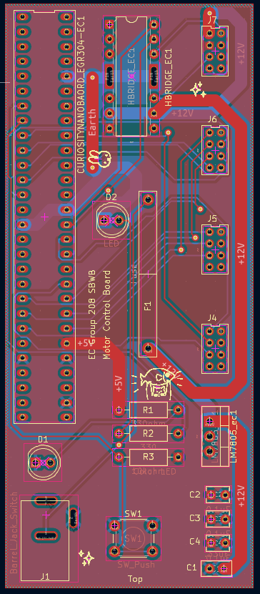
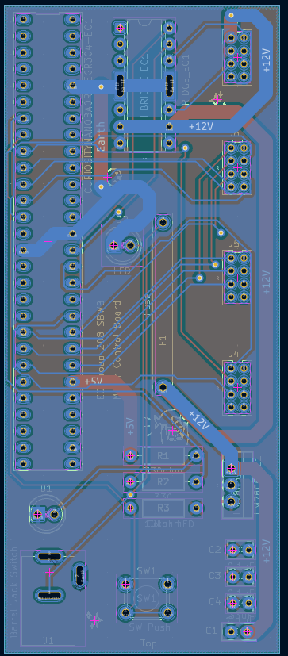
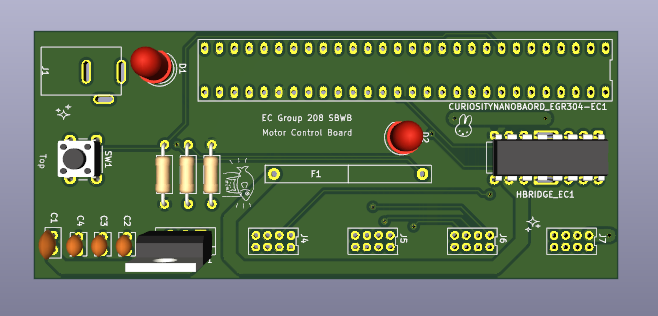
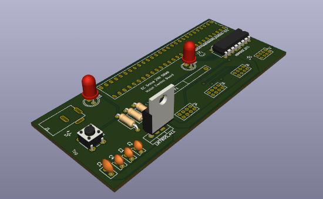

PCB Design
Overview
This page documents the printed circuit board (PCB) layout for the actuation and motor control board of Project SBWB (Self-Balancing Work Bench). The layout was created in KiCad 10 from the updated schematic on the Schematics page and manufactured by PCBWay as a two-layer board. The final design passes the KiCad Design Rules Check (DRC) with zero errors and was checked with the JLCDFM manufacturability tool before ordering.
The board takes 12 V DC in through a switched barrel jack and a 2.5 A fuse. An LM7805 regulates it to 5 V for the logic, and a Curiosity Nano microcontroller drives the actuator through a FAN8100N H-bridge. Headers along the right edge connect the board to the rest of the team's system.
PCB Layout

Figure 1: Full PCB layout, both copper layers. Top copper is shown in red and bottom copper in blue. The wide 2.13 mm traces carry +12 V, +5 V, and ground, and the 0.2 mm traces carry signals.

Figure 2 (left): Top (front) layer, with the +5V pour, power traces, and top silkscreen. Figure 3 (right): Bottom (back) layer, with the ground (Earth) pour and signal routing.

Figure 4: 3D render, top view. Shows the component placement, the four headers (J4–J7), and the "EC Group 208 SBWB Motor Control Board" label.

Figure 5: 3D render, isometric view. Shows the through-hole parts at their real heights, including the LM7805 regulator, the FAN8100N H-bridge, the LEDs, and the debug push button.
Board Specifications
| Specification | Requirement | This Design |
|---|---|---|
| Copper layers | 2 (top and bottom) | 2 |
| Board size | ≤ 100 mm × 100 mm | 42.5 mm × 100 mm |
| Copper weight | 0.5 oz/ft² (design basis) | Designed for 0.5 oz/ft², manufactured at 1 oz/ft² |
| Power and ground trace width | ≥ 40 mil, sized with a calculator | 2.13 mm (83.9 mil) |
| Signal trace width | Fabricator minimum | 0.2 mm (about 8 mil) |
| Power and ground planes | Both sides | +5V pour (top), ground pour (bottom) |
| Via annular ring | Fabricator minimum | 0.2 mm |
| Initials on top copper | Large, bold font | "EC" |
| Layer labels | "top", "bottom", group name | "Top", "Bottom", "Group 208 SBWB Motor Control Board" |
| Fabrication | Two-layer FR-4 | FR-4, 1.6 mm, green soldermask, top silkscreen (PCBWay) |
| DRC | 0 errors | 0 errors, 0 warnings, 0 unconnected pads |
Layout Design Decisions
Component Placement: The board is a narrow 42.5 mm × 100 mm layout. The Curiosity Nano runs along the left edge, so its pins can fan out to the right toward the rest of the circuit. The FAN8100N H-bridge sits at the top center, close to the microcontroller pins that drive it (FORWARDA on RA2 and REVERSEA on RA0). The four 702460801 headers (J7, J6, J5, J4) line the right edge from top to bottom. The debug LED (D2) and fuse (F1) sit in the middle of the board, and resistors R1–R3 are in the lower center. The power section is along the bottom: the barrel jack (J1) and power LED (D1) on the lower left, and the LM7805 regulator with capacitors C1–C4 on the lower right. The debug push button (SW1) is at the bottom center.
Power Routing: Trace widths were sized with the Advanced Circuits trace width calculator, using the 2.5 A fuse rating, 0.5 oz/ft² copper, external layers, and a 10 °C temperature rise. The calculator gave a required width of 83.7 mil (about 2.13 mm). All power and ground traces (12 V input, fuse, motor outputs, 5 V, and ground) are 2.13 mm (83.9 mil) wide. This meets the calculated requirement and is more than twice the 40 mil checklist minimum. Because the board was manufactured with 1 oz copper instead of the 0.5 oz used in the calculation, the traces have extra current margin. Signal traces are 0.2 mm (about 8 mil).
Power and Ground Planes: The top copper layer has a +5V power pour and the bottom copper layer has a ground (Earth) pour. The pours give the logic supply and its return path a low-impedance path across the whole board.
Decoupling Capacitors: C1 (0.33 µF) and C2 (0.1 µF) are the input and output capacitors for the LM7805. C3 (0.1 µF) is the bypass capacitor for the FAN8100N H-bridge, and C4 (0.1 µF) is the bypass capacitor for the Curiosity Nano. All four capacitors are grouped in the lower right next to the LM7805.
Connectors: J4, J5, and J6 are 702460801 headers that connect this board to the other subsystems. J7 is a 702460801 header that serves as both the test header and the actuator connection: pins 3 and 4 carry MotorOut1 and MotorOut2 from the H-bridge. All connectors are along the board edges, so cables can plug in without crossing over other parts, and all are through-hole for mechanical strength.
Testing and Debugging: J7 brings TP1 (12 V after the fuse), TP2 (5 V), and both motor outputs to one header, so the board can be probed without touching components. The debug LED (D2, with R2) and the debug push button (SW1, with a 10 kΩ pull-up R3) can be used to test the microcontroller code. The power LED (D1, with R1) shows when the board has power.
Routing Practices: The board was routed with a combination of the autorouter and hand routing. The power and ground traces were routed by hand. Vias were enlarged to give a 0.2 mm annular ring for reliable manufacturing.
Design Rules Check (DRC)
The final design passes the KiCad DRC with 0 errors, 0 warnings, and 0 unconnected pads. Two cosmetic silkscreen warnings were reviewed and excluded.

Figure 6: KiCad DRC results showing zero errors
Manufacturing Verification
The Gerber and drill files were checked with the JLCDFM online DFM tool before ordering from PCBWay. All routing, trace width and spacing, annular ring, hole clearance, slot, and drill checks passed (all 100 holes rated Good). The remaining flags are false positives:
- "THT to SMD": JLCDFM does not have the schematic, so it reads a round through-hole pad next to the barrel jack's slotted pads (0.91 mm apart) as a via. This check only matters for automated assembly, and this board is hand-soldered.
- Silkscreen to pad: Some footprint outline lines touch pads. The fabricator clips these automatically.
Custom footprints are stored in the FootprintLib_EGR304_EC footprint library, which is included in the KiCad project zip.